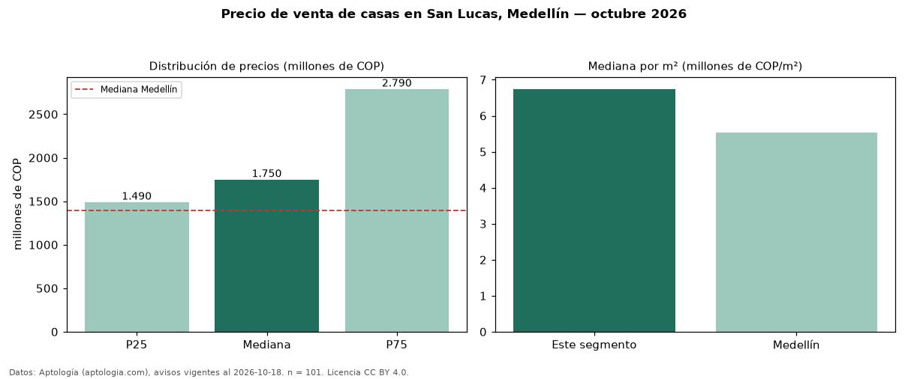

Precio de venta de casas en San Lucas, Medellín — octubre 2026
COP 1,75 mil millones es el precio mediano de casas en venta en San Lucas, Medellín (n = 101 avisos). Frente a la mediana de Medellín para casas (COP 1,39 mil millones), queda 26 % por encima. Por metro cuadrado, la mediana es COP 6,74 millones/m² (n = 101 avisos con área), 22 % por encima de Medellín (COP 5,53 millones/m²). Con el precio por m² de arriendo del mismo segmento (COP 45.000/m² al mes), la rentabilidad bruta implícita es 8,0 % anual (aproximación con medianas de ofertas distintas). El área mediana anunciada es 271 m². El segmento con más oferta es el de 3 o más habitaciones (99 avisos, mediana COP 1,80 mil millones). La administración mediana declarada es COP 1,26 millones al mes (n = 63). Por precio mediano es el puesto 14 de 39 barrios de Medellín con al menos 30 avisos de casas en venta (COP): en la franja media. Datos: Aptología (aptologia.com), CC BY 4.0 — https://www.aptologia.com/casas-en-venta/medellin/san-lucas. Archivos: PDF, CSV con las cifras y gráfica PNG.

| Avisos únicos | 101 |
|---|---|
| Percentil 25 | COP 1.490.000.000 |
| Mediana | COP 1.750.000.000 |
| Percentil 75 | COP 2.790.000.000 |
| Mediana por m² | COP 6.744.186 |
Fuente: avisos vigentes de portales inmobiliarios recopilados por Aptología, deduplicados (mínimo 30 avisos únicos por celda). Precios pedidos, no cerrados. Fecha: 2026-10-18.